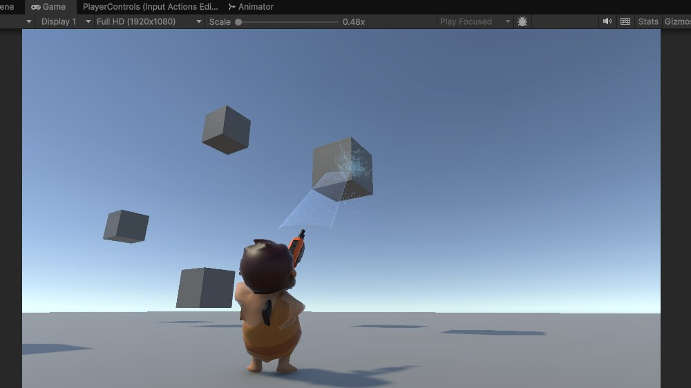

Dino Cleaner
공룡이 이동 수단인 세계에서 공룡을 세차하는 게임

- Period
- 2026.09 ~ 진행 중
- Team
- 4인 (클라이언트 3인, 기획/PM 1인)
- Role
- 클라이언트 — 플레이어 · 장비 시스템 구현
- Stack
- Unity 3D
- C#
- Input System
- ASMDEF
- Animation Rigging
Scope · 작업 범위
내가 한 것
- 플레이어 애니메이션 · IK
- 장비 시스템
- 청소기 물 발사 모션
- 플레이어 · 장비 ASMDEF 분리
팀이 한 것
- 클라이언트 팀원 A — UI
- 클라이언트 팀원 B — 인 스테이지 기능
- 기획/PM 팀원 — 게임 기획, 일정 관리
함께 정한 것
- 공용
Data패키지 도입 (제가 건의, 팀 협의로 결정)
01 · CORE SYSTEMS
Strategy 패턴 기반 장비 시스템
- 장비를 두 갈래의 추상 클래스로 나눴습니다. 손에 드는 도구(청소기, 사다리 같은 설치형 도구)는
Tool↗의UseTool()을, 이동 장비(기본 신발, 비행용 공룡)는MovementEquipment↗의CalculateMovement()를 각자 구현합니다. - 플레이어는 지금 들고 있는 장비의 추상 메서드만 호출하고, 어떤 장비인지는 모릅니다(
PlayerEquipment.UseCurrentTool↗). 한 장비의 동작을 고칠 때 플레이어 코드나 다른 장비 코드를 건드리지 않습니다.
플레이어 애니메이션 상태 설계
- 먼저 상태 머신 다이어그램을 그려 필요한 애니메이션 목록을 뽑았고, 실제 애니메이터 컨트롤러를 구성할 때도 이 다이어그램을 기준으로 삼았습니다.
stateDiagram-v2
state "Stand · Idle ↔ Walk" as Stand
state "Kneel · Idle ↔ Walk" as Kneel
state "Prone · Idle ↔ Walk" as Prone
state "Stand To Kneel" as S2K
state "Kneel To Prone" as K2P
state "Prone To Kneel" as P2K
state "Kneel To Stand" as K2S
state "Jump Up" as JU
state "Jump Loop" as JL
state "Jump Down" as JD
[*] --> Stand
Stand --> S2K : Ctrl
S2K --> Kneel
Kneel --> K2P : Ctrl
K2P --> Prone
Kneel --> K2S : Space
Prone --> P2K : Ctrl / Space
P2K --> K2S
K2S --> Stand
Stand --> JU : Space
JU --> JL
JL --> JD : 착지
JD --> StandASMDEF 패키지 분리
- 팀이 Assembly Definitions(ASMDEF)로 Core, Data, UI 등 패키지를 나눴고, 저는 플레이어 · 장비 영역을 맡았습니다. 패키지 사이에 순환 참조가 생기면 컴파일 오류로 바로 드러납니다.
02 · TROUBLESHOOTING
패키지 간 순환 참조와 공용 Data 패키지 도입
- ISSUE
- 팀원이 만든
EventBus규격은 이벤트를Core패키지에 선언하도록 되어 있었습니다. 제가 맡은 장비의 이벤트를 이 규격대로Core에 선언하자, 이벤트가 장비 패키지의 열거형을 쓰고 장비 패키지는Core를 참조하는 순환 참조가 생겨 컴파일 오류가 났습니다. - DECISION
- 열거형 · 구조체처럼 메서드 없는 데이터만 담는 공용
Data패키지를 참조 계층 최하단에 두자고 팀에 건의했고, 협의를 거쳐 도입했습니다. 각 패키지가 서로를 직접 참조하지 않고Data를 참조하도록 바꿨습니다. - RESULT
- 팀의
EventBus규격을 바꾸지 않고 장비 · 플레이어 이벤트를 발행할 수 있게 됐고, 패키지 의존 방향이Data를 최하단으로 하는 단방향으로 정리됐습니다. - LEARNED
- 패키지 경계를 컴파일러가 검사하게 두면 설계 실수를 일찍 발견할 수 있다는 것을 배웠습니다.
체형 불일치로 인한 파지 클리핑 (IK)
- ISSUE
- 실사 비율의 범용 애니메이션 에셋(Mixamo)을 카툰풍 캐릭터에 적용하자, 뼈대 비율 차이로 청소기 장착 시 손이 허공에 뜨거나 몸통을 관통하는 클리핑 현상이 발생했습니다.
- DECISION
- 애니메이션 키프레임을 고치는 대신 Unity Animation Rigging을 도입했습니다. 청소기 위치를 먼저 정하고, 양손이 Two Bone IK로 청소기 그립 위치를 따라가게 했습니다.
- RESULT
- 애니메이션이 바뀌어도 양손이 청소기 그립에 붙어 있게 되어, 손이 뜨거나 몸통을 관통하던 클리핑이 사라졌습니다.
- LEARNED
- 목표 위치를 기준으로 뼈대를 계산하는 IK 방식과, 이를 스크립트로 제어하는 방법을 익혔습니다.